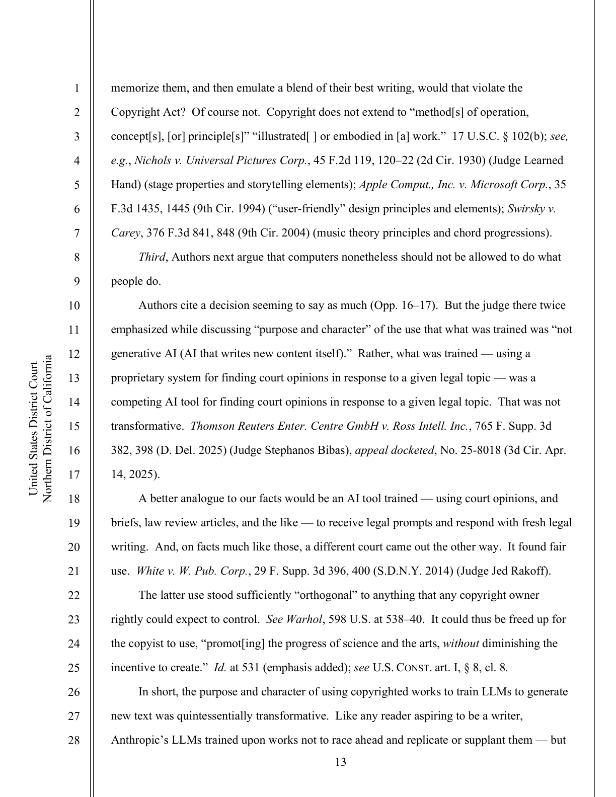
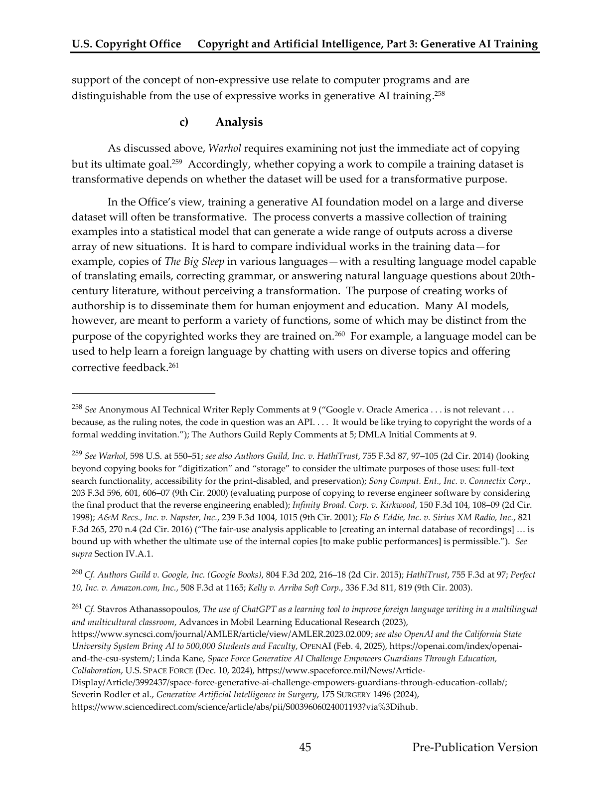
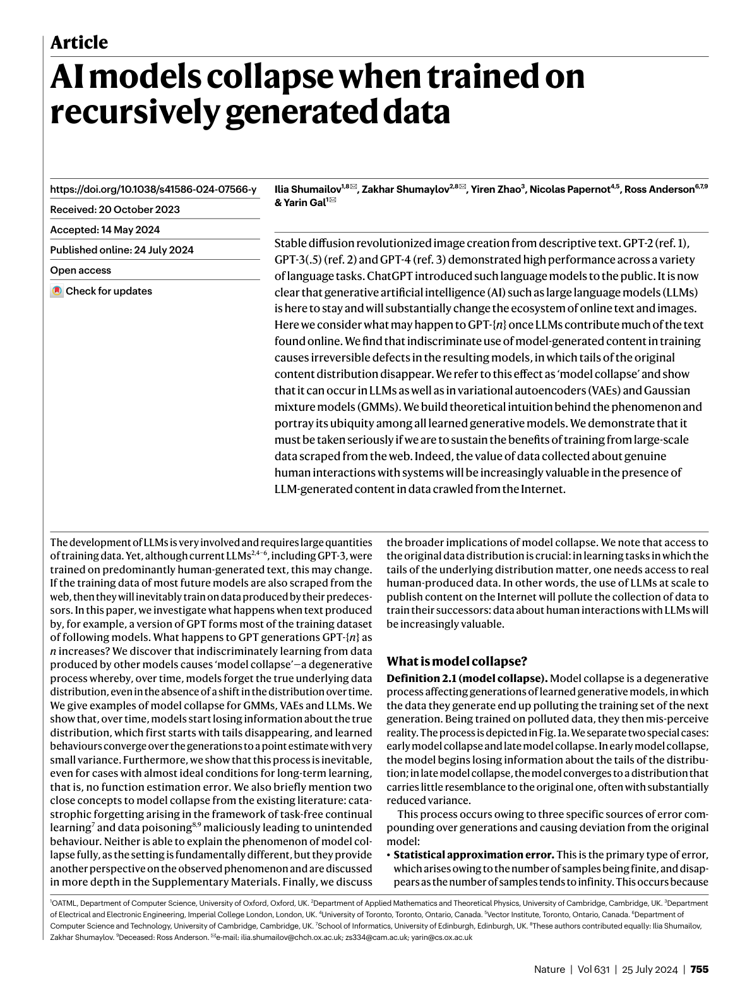
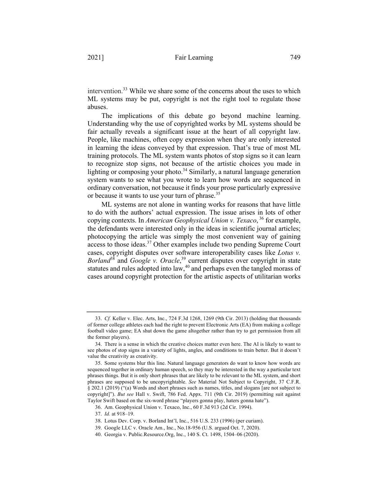

Authors Guild. “Key Updates on the $1.5 Billion Anthropic Settlement.” The Authors Guild, authorsguild.org/news/anthropic-settlement-key-updates/.
Page 11 of 11 — the tail being swallowed
Works Cited
Seventeen sources feed this site — nine peer-reviewed or law-review studies, a federal court order, the Copyright Office’s report, and the industry’s own words — indexed here at the tail of the snake, where everything the argument ate ends up.
You are here: inside the mouth.

Bartz order
USCO report
Nature paper
Fair Learning
Source type: News
Source type: Court order
Bartz v. Anthropic PBC. No. 3:24-cv-05417-WHA, U.S. District Court for the Northern District of California, 23 June 2025. CourtListener, www.courtlistener.com/docket/69058235/bartz-v-anthropic-pbc/.
Source type: Proceedings
Carlini, Nicholas, et al. “Extracting Training Data from Large Language Models.” Proceedings of the 30th USENIX Security Symposium (USENIX Security 21), USENIX Association, 2021, pp. 2633–50, www.usenix.org/system/files/sec21-carlini-extracting.pdf.
Source type: Blog
“Detecting and Preventing Distillation Attacks.” Anthropic, 23 Feb. 2026, www.anthropic.com/news/detecting-and-preventing-distillation-attacks.
Source type: Peer-reviewed
Henderson, Peter, et al. “Foundation Models and Fair Use.” Journal of Machine Learning Research, vol. 24, no. 400, 2023, pp. 1–79, www.jmlr.org/papers/v24/23-0569.html.
Source type: Working paper
Hui, Xiang, et al. “The Short-Term Effects of Generative Artificial Intelligence on Employment: Evidence from an Online Labor Market.” Working paper, SSRN, 31 July 2023, papers.ssrn.com/sol3/papers.cfm?abstract_id=4527336.
Source type: Book
Kant, Immanuel. Groundwork of the Metaphysics of Morals. Translated and edited by Mary Gregor, Cambridge UP, 1998.
Source type: Law review
Lee, Katherine, et al. “Talkin’ ’Bout AI Generation: Copyright and the Generative-AI Supply Chain.” Journal of the Copyright Society, vol. 72, no. 2, 2025, pp. 251+, james.grimmelmann.net/files/articles/talkin-bout-ai-generation.pdf.
Source type: Law review
Lemley, Mark A., and Bryan Casey. “Fair Learning.” Texas Law Review, vol. 99, no. 4, 2021, pp. 743+, texaslawreview.org/fair-learning/.
Source type: Law review
Sag, Matthew. “Copyright Safety for Generative AI.” Houston Law Review, vol. 61, no. 2, 2023, pp. 295+, houstonlawreview.org/article/92126-copyright-safety-for-generative-ai.
Source type: Peer-reviewed
Samuelson, Pamela. “Generative AI Meets Copyright.” Science, vol. 381, no. 6654, 14 July 2023, pp. 158–61, https://doi.org/10.1126/science.adi0656.
Source type: Book
Schur, Michael. How to Be Perfect: The Correct Answer to Every Moral Question. Simon & Schuster, 2022.
Source type: News
Sharwood, Simon. “Senior White House Official Claims China’s K3 Model Stolen from Anthropic.” The Register, 23 July 2026, www.theregister.com/ai-and-ml/2026/07/23/senior-white-house-official-claims-chinas-k3-model-stolen-from-anthropic/5276804.
Source type: Peer-reviewed
Shumailov, Ilia, et al. “AI Models Collapse When Trained on Recursively Generated Data.” Nature, vol. 631, 24 July 2024, pp. 755–59, www.nature.com/articles/s41586-024-07566-y.
Source type: Gov report
United States, Copyright Office. Copyright and Artificial Intelligence, Part 3: Generative AI Training. Pre-publication version, May 2025, www.copyright.gov/ai/.
Source type: Proceedings
Villalobos, Pablo, et al. “Position: Will We Run Out of Data? Limits of LLM Scaling Based on Human-Generated Data.” Proceedings of the 41st International Conference on Machine Learning, edited by Ruslan Salakhutdinov et al., vol. 235, PMLR, 2024, pp. 49523–44, proceedings.mlr.press/v235/villalobos24a.html.
Source type: News
Yildirim, Ece. “US Treasury Chief Threatens Sanctions on Chinese AI Labs Over ‘IP Theft’ Concerns.” Gizmodo, 21 July 2026, gizmodo.com/us-treasury-chief-threatens-sanctions-on-chinese-ai-labs-over-ip-theft-concerns-2000788553.
Bartz v. Anthropic PBC — order on fair use, full text
Open the PDF